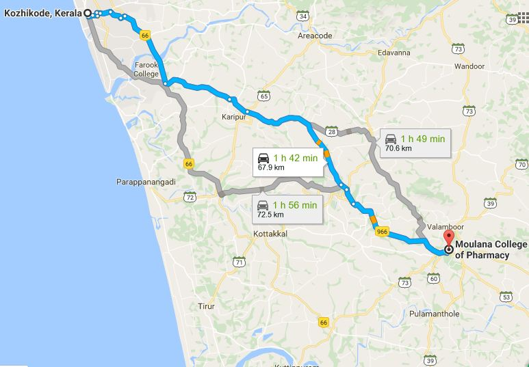

ADDRESS:
Moulana College Of Pharmacy,
Near Railway Station,
Angadippuram P.O,
Perinthalmanna,
Malappuram

Moulana College Of Pharmacy,
Near Railway Station,
Angadippuram P.O,
Perinthalmanna,
Malappuram
Moulana College of Pharmacy was founded under the aegis of Moulana Charitable Trust.
It is on Kozhikkode Palakkadu Highway. 5 Km away from Perinthalmanna. It is 70 Km South-East of Calicut
Prayer meeting:Don't have prayer meeting or contacts
How to reach:Catch Perinthalmanna or Palakkadu bus from New bus stand and get down at Angadipuram or Maulana Pharmacy College stop. Get an auto to reach the college.
Possibility:MES Medical College college can reach out to here and build contacts as it is only 6 Km away from MES